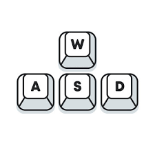

Cómo Jugar
Requisitos del Sistema
Aunque Java es conocido por ser multiplataforma y compatible con una amplia gama de dispositivos, aún hay consideraciones específicas que debes tener en cuenta para garantizar una experiencia de juego fluida y sin problemas. Aquí tienes una descripción detallada de los requisitos del sistema para poder jugar.
Sistema Operativo:
El primer y más importante requisito es el sistema operativo. Dado que Java es compatible con múltiples sistemas operativos, incluidos Windows, macOS y Linux, puedes disfrutar del juego en cualquiera de estas plataformas. Asegúrate de tener una versión actualizada y compatible del sistema operativo instalada en tu dispositivo.
Procesador (CPU):
Se recomienda un procesador de doble núcleo o superior con una velocidad de al menos 2 GHz para garantizar un rendimiento fluido y una respuesta rápida del juego.
Memoria RAM:
La memoria RAM es esencial para el rendimiento general del sistema y la ejecución suave del juego. Se recomienda tener al menos 4 GB de RAM para juegos Java básicos, aunque para juegos más intensivos gráficamente, como juegos en 3D, se recomienda tener 8 GB o más de RAM para un rendimiento óptimo.
Tarjeta Gráfica (GPU):
Aunque Java no es tan dependiente de la tarjeta gráfica como algunos otros motores de juego, una tarjeta gráfica dedicada puede mejorar significativamente la calidad visual y el rendimiento del juego. Se recomienda una tarjeta gráfica con al menos 1 GB de memoria VRAM para juegos Java de alta calidad.
Versión de Java:
Es fundamental tener instalada la última versión estable de Java en tu sistema. El juego puede requerir una versión específica de Java para funcionar correctamente, así que asegúrate de verificar los requisitos de Java del juego y tener instalada la versión correspondiente.
Controles
Controla la serpiente usando las teclas W(arriba), A(izquierda), S(abajo) y D(derecha). Come los puntos para hacer crecer a la serpiente, evita chocar con las paredes a partir del nivel 2 y con su propio cuerpo desde el inicio. Supera los diferentes niveles de dificultad y consigue la mayor puntuación posible. ¡Suerte!",
